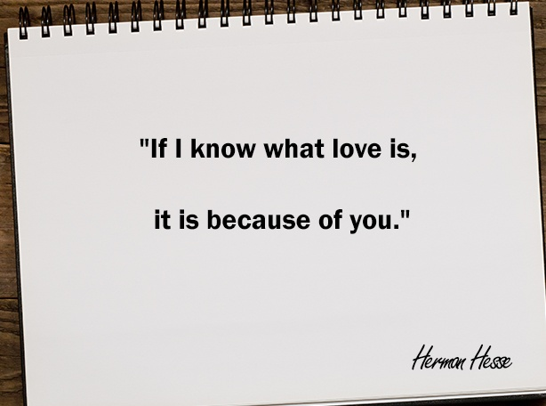
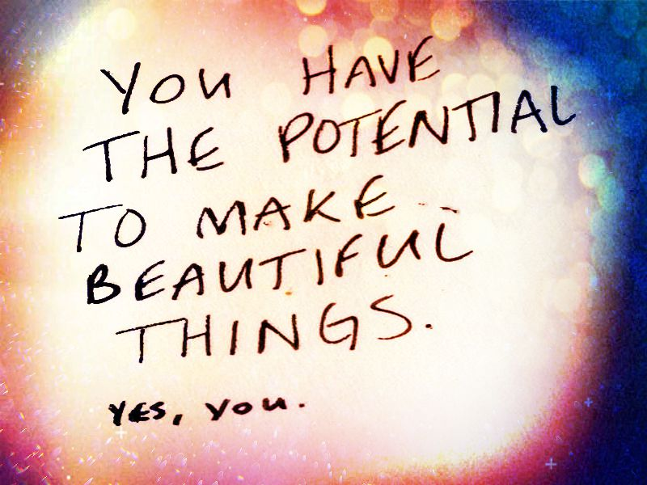
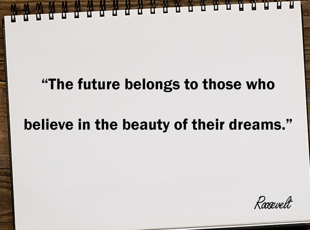
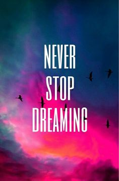
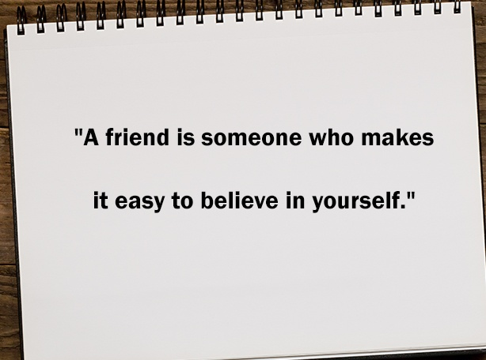
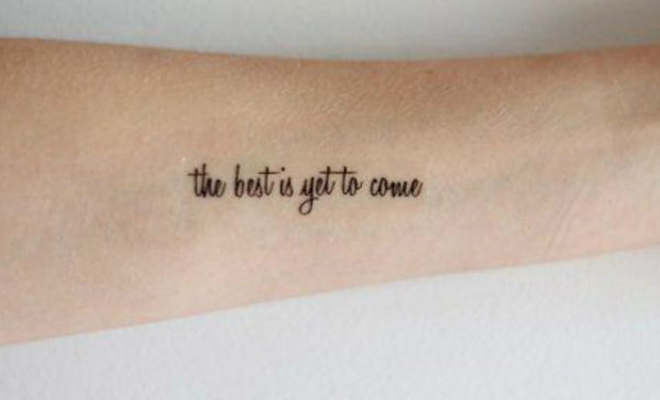
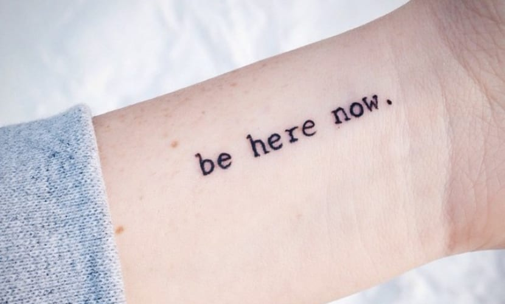
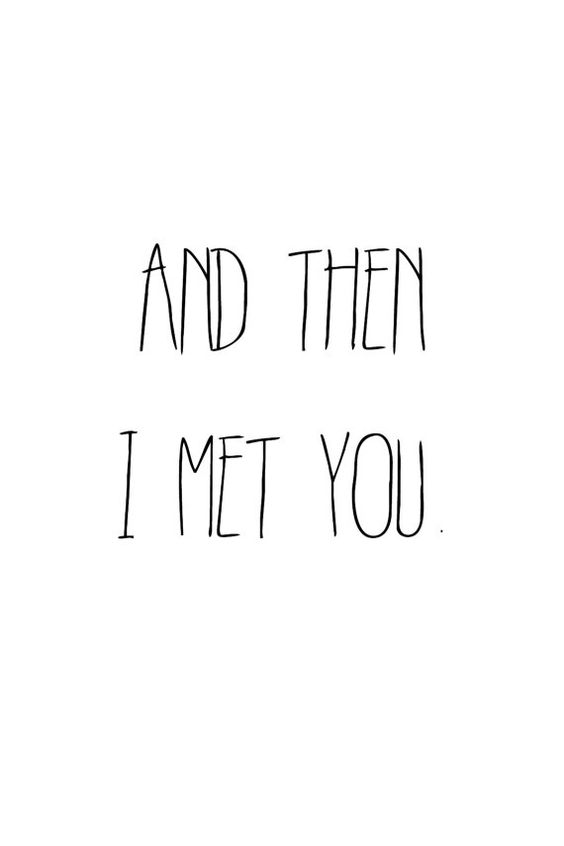
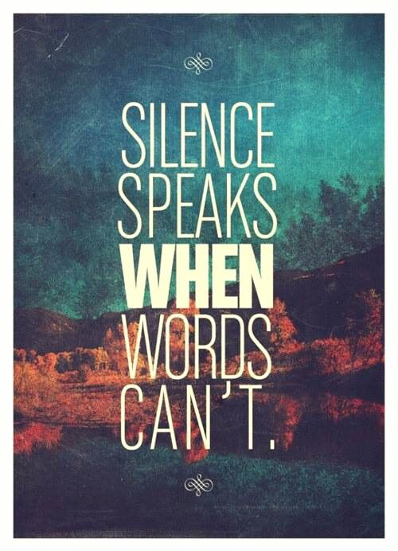

Frases en Ingles

1) Si sé lo que es el amor, es por ti.
2) Tienes el potencial de hacer cosas hermosas. sí tú.
3) El futuro pertenece a quienes creen en la belleza de sus sueños.
4) Nunca dejes de soñar.
5) Cree en ti mismo. no dejes que nadie te diga que no puedes.
6) Un amigo es alguien que hace que sea fácil creer en ti mismo.
7) Lo mejor está por venir.
8) Realmente extraño los viejos tiempos.
9) Te amo por todo lo que eres, todo lo que has sido y todo lo que aún debes ser.
10) crea tu propio brillo.
11) Estar aquí ahora.
12) El amor es el triunfo de la imaginación sobre la inteligencia.
13) y luego te conocí.
14) El silencio habla cuando las palabras no pueden.
15) Disfruta la vida hoy, ayer se fue y mañana nunca llegó.
16) La vida es corta. rompe las reglas perdona rápidamente, besa lentamente, ama de verdad, ríe incontrolablemente y nunca te arrepientas de nada que te haya hecho sonreír.
17) No quiero una vida perfecta, quiero una vida feliz.